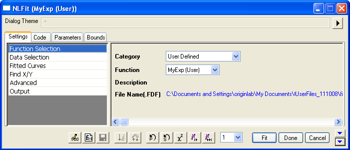
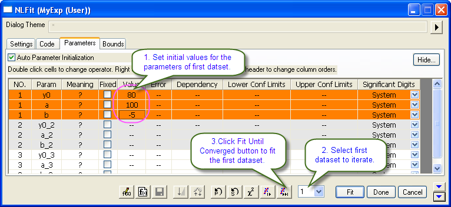
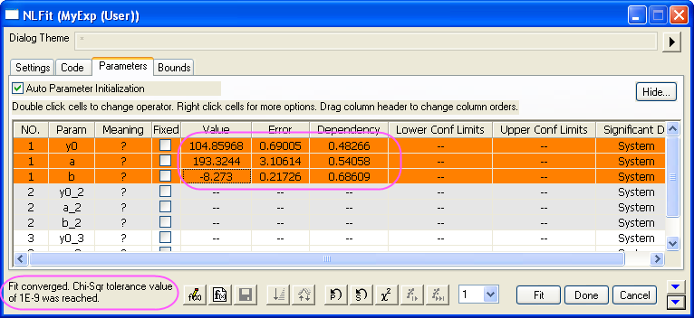
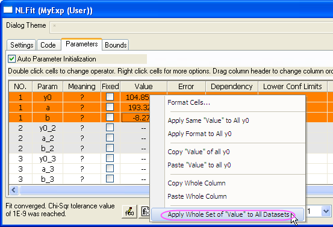
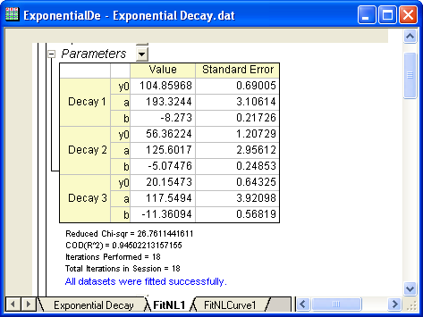

Anpassen mehrerer Datensätze durch Anpassung erst eines Datensatzes und die anschließende Verwendung der Fit-Parameter für die anderen Datensätze
Fitting-MultiDataset
Zusammenfassung
In einigen Fällen haben Sie vielleicht mehrere Datensätze und möchten diese mit Hilfe der benutzerdefinierten Funktion ohne Parameterinitialisierungscode anpassen. Eine größere Effizienz wird erreicht, wenn Sie einen Datensatz anpassen und dann die Parameter des Fits auf die anderen Datensätze anwenden.
Origin-Version mind. erforderlich: 8.6.0 SR6
Was Sie lernen werden
Dieses Tutorial zeigt Ihnen, wie Sie:
- Eine benutzerdefinierte Fitfunktion mit Hilfe des Hilfsmittels Fitfunktionen erstellen erstellen
- Eine unabhängige Anpassung durchführen
- Einen von mehreren Datensätzen durch 1-Iteration oder vollständige Iteration anpassen
- Parameterwerte eines Datensatzes auf andere Datensätze anwenden
Schritte
Eine benutzerdefinierte Fitfunktion mit Hilfe des Hilfsmittels Fitfunktionen erstellen erstellen
Das Hilfsmittel Fitfunktion erstellen kann verwendet werden, um eine benutzerdefinierte Funktion zu erstellen oder zu bearbeiten. In dem folgenden Abschnitt definieren Sie mit diesem Hilfsmittel eine Fitfunktion mit dem Namen MyExp.
- Wählen Sie Hilfsmittel: Fitfunktionen erstellen im Menü (oder drücken Sie F8), um den Dialog Fitfunktionen erstellen zu öffnen. Wählen Sie das Ziel Eine neue Funktion erstellen.

- Klicken Sie auf die Schaltfläche Weiter, um zur Seite Name und Typ zu gelangen. Geben Sie MyExp in das Feld Funktionsname ein und wählen Sie die Option Origin C für den Funktionstyp.

- Klicken Sie auf die Schaltfläche Weiter, um zur Seite Variablen und Parameter zu gelangen. Geben Sie die Variablen und Parameter, wie im folgenden Screenshot gezeigt, ein:

- Klicken Sie auf die Schaltfläche Weiter, um zur Seite Origin C-Ausdrucksfunktion zu gelangen. Geben Sie den Funktionskörper y=y0+a*exp(b*x) in das Feld Funktionskörper ein. Um die Richtigkeit der Funktion zu überprüfen, klicken Sie auf die Schaltfläche neben dem Feld Funktion, um den Code Builder von Origin zu öffnen:

- Klicken Sie im Code Builder auf die Schaltfläche Kompilieren, um die Funktion zu kompilieren. Falls dies geschieht, wird die Meldung Kompilierung fertig gezeigt und Sie können auf die Schaltfläche Zurück zum NSLF klicken, um zum Dialog Fitfunktion erstellen zurückzukehren.

- Klicken Sie auf die Schaltfläche Fertigstellen, um diese Fitfunktion MyExp zu erstellen.
Mehrere Datensätze mit der benutzerdefinierten Fitfunktion anpassen
- Importieren Sie \Samples\Curve Fitting\Exponential Decay.dat in das Origin-Arbeitsblatt.
- Markieren Sie alle Spalten und wählen Sie im Menü Analyse: Anpassen: Nichtlinearer Fit, um das Dialogfeld NLFit zu öffnen.
- Wählen Sie die Funktion aus, die gerade auf der Registerkarte Einstellungen, Seite Funktionsauswahl, definiert wurde:
- 
- Wechseln Sie auf die Registerkarte Parameter und geben Sie 80, 100, -5 in der Spalte Wert als Anfangswerte für y0, a, b des ersten Datensatzes ein. Wählen Sie dann 1 aus der Auswahlliste des unabhängigen Fits aus und iterieren Sie den ersten Datensatz, bis er konvergiert.
- 
- Die Parameterwerte werden berechnet. Ein Hinweis auf das Anpassungsergebnis befindet sich in der unteren linken Ecke dieses Dialogs.
- 
- Zum Initialisieren der Parameter von anderen Datensätzen wenden Sie die Parameterwerte des ersten Datensatzes auf andere Datensätze an, indem Sie mit der rechten Maustaste auf die Werte klicken und dann Gesamten Datensatz von "Wert" auf alle Datensätze anwenden im Ausklappmenü auswählen.
- 
- Klicken Sie auf die Schaltfläche Fit, um die Anpassung für alle Datensätze fertigzustellen.
- 